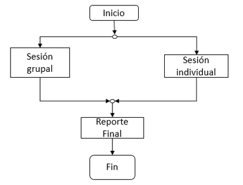

Se realiza cuando el Tutor detecta estudiantes en situaciones especiales, de riesgo escolar o cuando el mismo alumno así lo solicite. El objetivo principal es el de orientar y apoyar al estudiante en los problemas escolares o personales que surjan durante el proceso formativo como dificultades en el aprendizaje, relaciones maestro-alumno, relaciones entre alumnos y, en caso de requerirlo, canalizarlo a instancias especializadas para su atención.
Al término de cada parcial el Tutor recabará información académica, lo que le permitirá detectar casos de riesgo. El Tutor deberá brindar Tutoría individual, citando a los alumnos para conocer las causas y hacer un correcto diagnóstico de la situación (véase la Figura 5). Es posible que el diagnóstico arroje evidencia que concuerde con otros alumnos, y que en conjunto lleven a la conclusión de que es necesario proporcionar asesoría académica a uno o un grupo de estudiantes. El Tutor deberá comunicarlo a la Jefatura de Carrera correspondiente y al Coordinador del Programa de Tutoría e iniciar el trámite de solicitud formal. La idea es gestionar los recursos y obtener la ayuda académica que evite que los estudiantes fracasen en la asignatura.
Figura 5. Proceso de Tutoría Individual.
En el caso de que las inasistencias revelen riesgo de deserción o exista evidencia, por mínima que sea, de un impacto negativo en el rendimiento escolar del alumno, el Tutor deberá reportarlo a la Jefatura de Carrera del Programa Educativo o a la Coordinador del Programa Institucional de Tutoría o en ambos e implementar una estrategia para solventar ese riesgo. Al término de cada período parcial y al término del semestre, el Tutor deberá emitir los reportes que sean necesarios para mantener actualizado el expediente escolar del estudiante y para mantener un registro de su productividad como Tutor.
< >